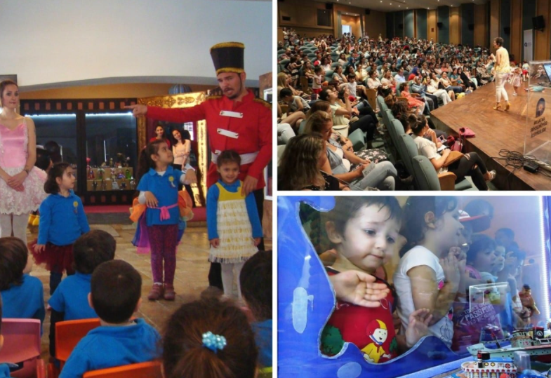

ANTALYA OYUNCAK MÜZESİ
Antalya, Kaleiçi mevkiinde yer alan araştırmacı yazar ve aynı zamanda şair olan Sunay Akın’ın öncülüğünde Antalya Oyuncak Müzesi açıldı. 23 Nisan 2011 tarihinde, Ulusal Egemenlik ve Çocuk bayramında açılan oyuncak müzesi, birbirinden farklı ilginç yaklaşık üç bin antika oyuncağın sergilendiği bir müzedir. Antalya Büyükşehir Belediyesi’nin büyük bir kültür mirası olarak bırakacağı bu proje Antalya’ya gelen yerli ve yabancı birçok turist tarafından ilgi görmeye devam ediyor. Antalya Kaleiçi’nde bulunan bu müze, İstanbul oyuncak müzesi ve İzmir’den sonra Türkiye’nin üçüncü oyuncak müzesi adını taşıyor. Ayrıca bir oyuncak müzesi de Gaziantep ilimizde yer alıyor.
1860’lı Yıllardan 1980’li yıllara, hatta günümüz değerli oyuncak eserlerine de yer vermekte olan bu müze Antalya’da gezilmesi gereken yerler arasında bulunuyor. Antalya’ya gitmişken bu değerli antika oyuncaklar ile süslenmiş ve daha birçok serginin ve eserin sizi beklediği bu müzeyi mutlaka ziyaret etmelisiniz.
Antalya Oyuncak Müzesi Nerede?
Müze, Antalya ilinin Kaleiçi Yat Limanı bölgesinde bulunan İskele Caddesinde yer alamaktadır. Nasıl Gidilir? Müzeye toplu taşıma ile gitme imkânınız bulunuyor. Antalya Kepez’den kalkan CV14 adlı otobüs ile yarım saat içerisinde. Konyaaltı’ndan kalkan 522 numaralı minibüs ile ardından TCS46 adlı otobüs ile yarım saat içerisinde ulaşım sağlayabilirsiniz.